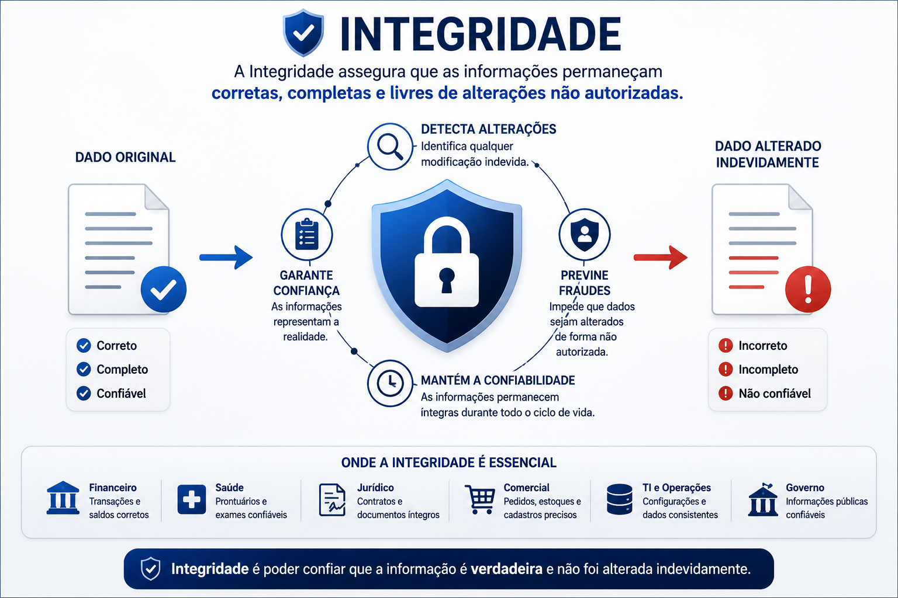
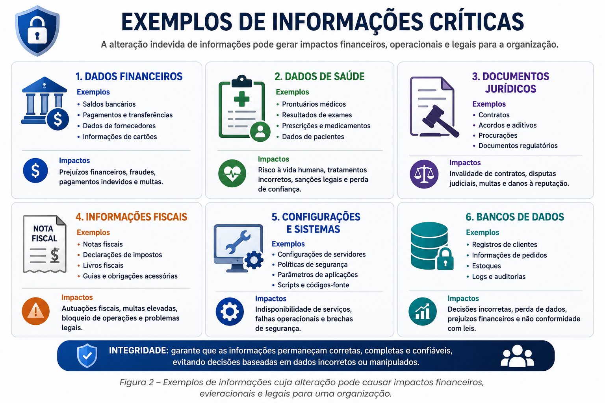
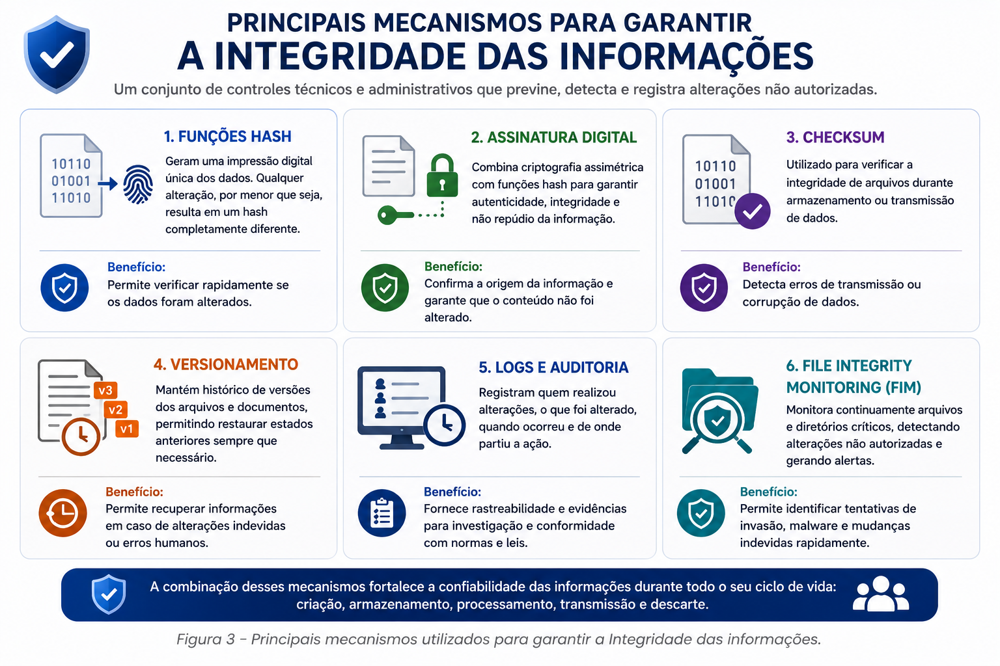
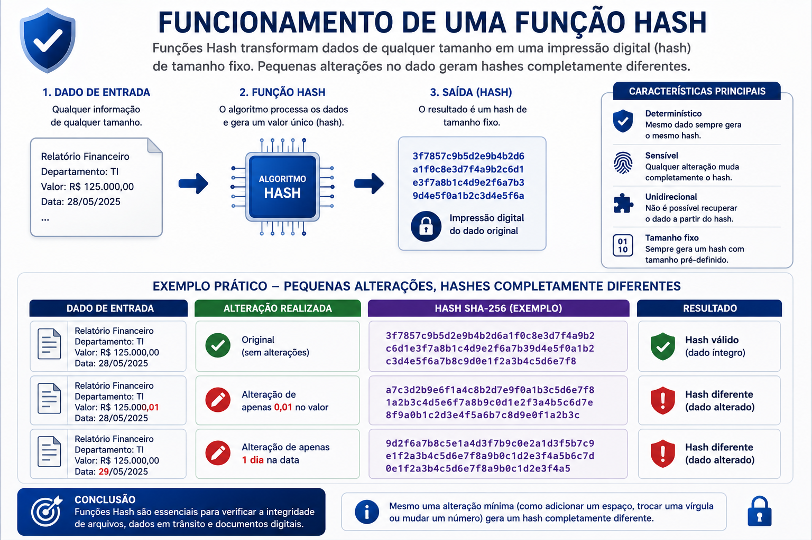
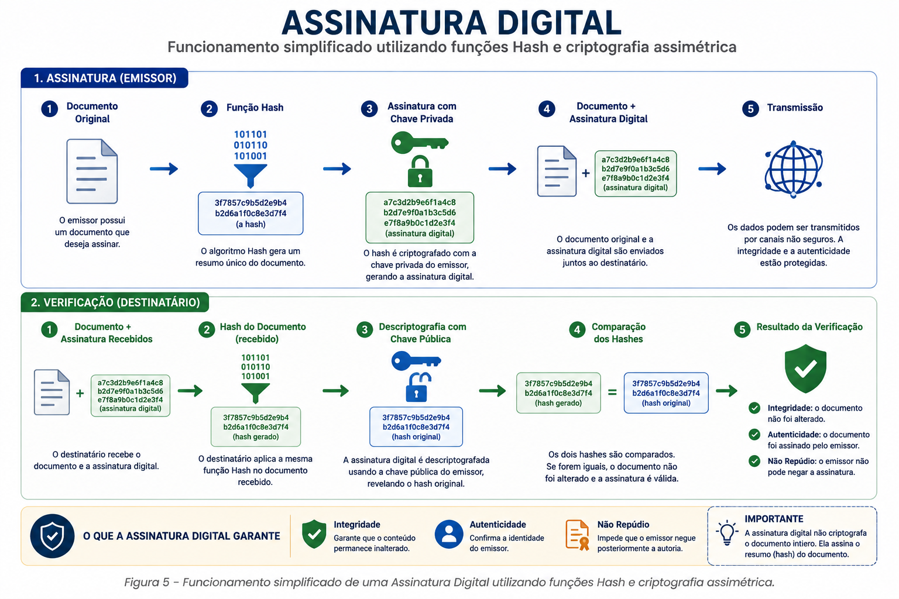
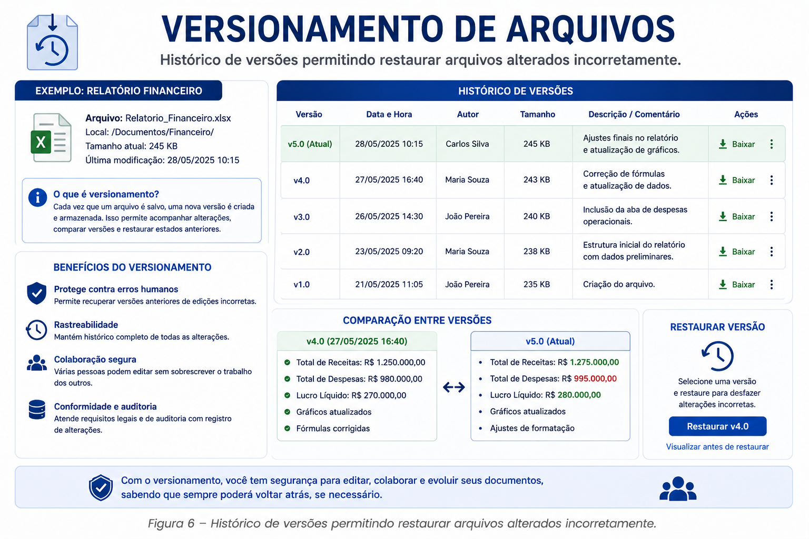
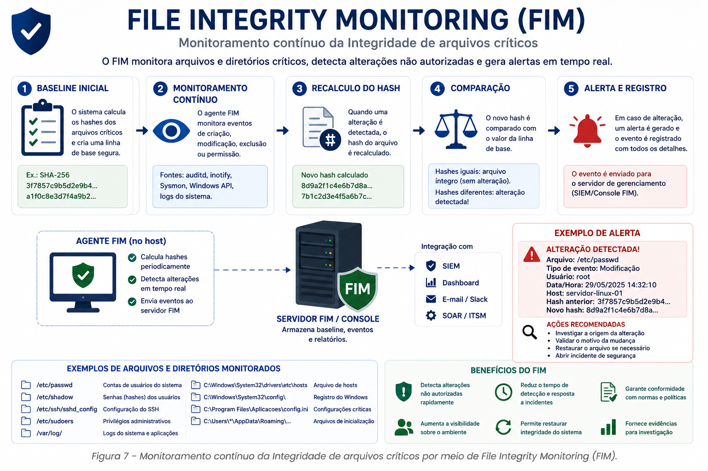
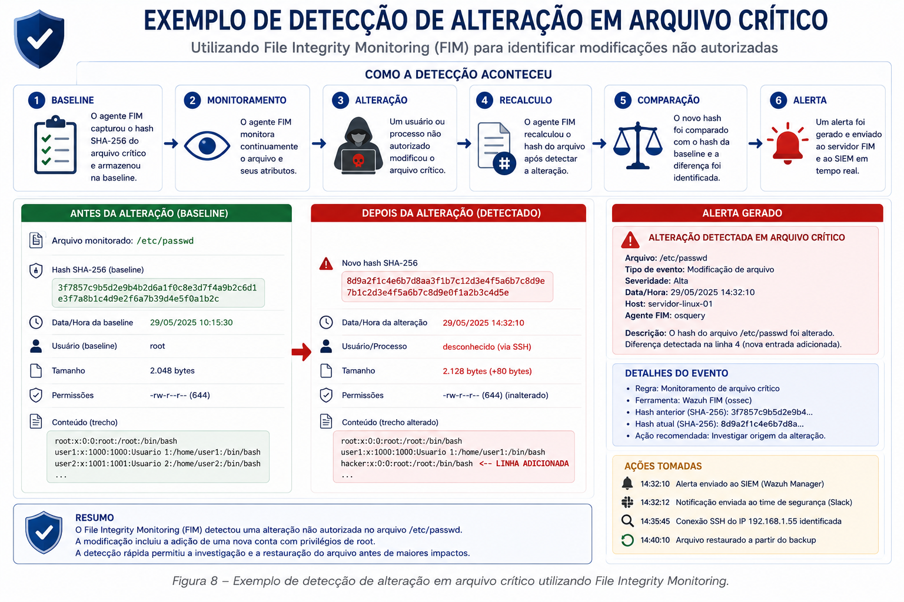
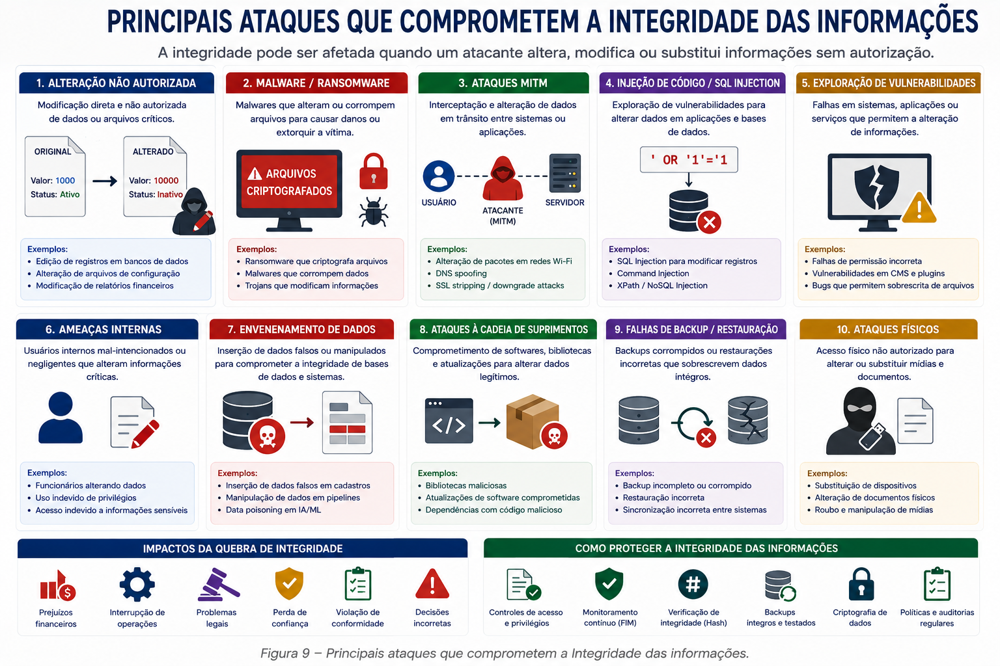
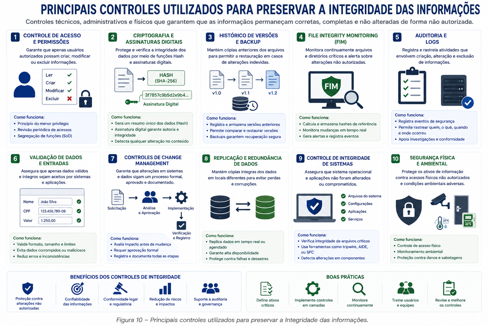

📋 Guia Rápido
Assinatura Digital
Checksum
Versionamento
Logs
File Integrity Monitoring
📖 Resumo Executivo
Imagine que um colaborador possua acesso ao sistema financeiro de uma organização.
Ele altera o número da conta bancária cadastrada para um fornecedor antes da realização de um pagamento. O sistema continua funcionando normalmente. Os dados permanecem disponíveis. Nenhuma informação foi excluída.
No entanto, um problema crítico ocorreu.
As informações deixaram de representar a realidade.
Mesmo que ninguém tenha acessado indevidamente os dados e que o sistema continue operacional, a organização passa a tomar decisões baseadas em informações incorretas. Nesse cenário, o princípio comprometido não é a Confidencialidade nem a Disponibilidade. É a Integridade.
Compreender como garantir que informações permaneçam corretas, completas e confiáveis durante todo o seu ciclo de vida, além de conhecer os principais mecanismos utilizados para detectar alterações não autorizadas.
🛡 O que é Integridade?
A Integridade representa a capacidade de preservar a exatidão, a consistência e a confiabilidade das informações. Seu objetivo é assegurar que os dados não sejam modificados de forma indevida, acidental ou maliciosa durante seu armazenamento, processamento ou transmissão.
Quando falamos em Integridade, não estamos dizendo que os dados nunca poderão ser alterados. Alterações fazem parte do funcionamento normal de qualquer organização. O ponto central é garantir que toda modificação seja autorizada, registrada e realizada por processos legítimos.

Integridade significa poder confiar que uma informação representa exatamente a realidade e que nenhuma alteração indevida ocorreu desde sua criação.
🏢 Por que a Integridade é importante?
A Integridade está diretamente relacionada à confiança que depositamos nas informações utilizadas diariamente pelas organizações. Empresas tomam milhares de decisões com base em dados armazenados em bancos de dados, planilhas, sistemas ERP, aplicações financeiras e documentos eletrônicos.
Quando essas informações são alteradas sem autorização ou de forma incorreta, as consequências podem envolver prejuízos financeiros, interrupção de processos, falhas operacionais, problemas jurídicos e até riscos à vida humana em ambientes hospitalares.
Em outras palavras, informações incorretas podem ser tão perigosas quanto informações vazadas.

✏ Alteração autorizada × Alteração não autorizada
Um dos maiores equívocos ao estudar Integridade é acreditar que qualquer modificação representa um incidente de segurança. Na realidade, sistemas corporativos existem justamente para permitir alterações constantes nas informações.
O fator determinante é verificar se essa alteração foi realizada por uma pessoa autorizada, utilizando um processo legítimo e devidamente registrado.
- Atualizar cadastro de clientes.
- Alterar endereço de entrega.
- Registrar pagamentos.
- Modificar salários autorizados.
- Atualizar inventário.
- Modificar saldo bancário.
- Alterar notas de alunos.
- Excluir registros de auditoria.
- Modificar contratos.
- Trocar dados de fornecedores.
A Integridade não impede alterações. Ela garante que toda modificação seja legítima, autorizada e passível de auditoria.
🛡 Como garantir a Integridade?
Proteger a Integridade exige a combinação de diferentes controles técnicos e administrativos. Nenhuma tecnologia, isoladamente, consegue impedir todas as formas de alteração indevida das informações.
As organizações adotam mecanismos capazes de detectar modificações, validar autenticidade, registrar alterações e permitir a recuperação de versões anteriores sempre que necessário.

Nos próximos tópicos conheceremos cada um desses mecanismos e entenderemos como eles trabalham em conjunto para preservar a confiabilidade das informações corporativas.
#️⃣ Funções Hash
Uma das técnicas mais utilizadas para verificar a Integridade das informações é a utilização de funções Hash. Um algoritmo Hash recebe um conjunto de dados de qualquer tamanho e produz uma sequência única de caracteres, conhecida como valor Hash ou resumo criptográfico.
Esse valor funciona como uma impressão digital do arquivo. Caso um único bit seja alterado, um novo Hash completamente diferente será gerado, indicando que o conteúdo sofreu alguma modificação.
É importante destacar que o Hash não protege o arquivo contra alterações. Seu objetivo é permitir que essas alterações sejam detectadas de maneira rápida e confiável.

Um arquivo ISO baixado do site oficial do fabricante normalmente possui um Hash SHA-256 publicado juntamente com o download. Após concluir o download, o usuário calcula o Hash localmente e compara com o valor informado pelo fabricante. Se ambos forem idênticos, há uma forte indicação de que o arquivo permaneceu íntegro durante a transferência.
🔐 Principais Algoritmos Hash
Diversos algoritmos Hash foram desenvolvidos ao longo dos anos. Alguns deles já não são considerados seguros para aplicações criptográficas devido à existência de colisões conhecidas, enquanto outros continuam sendo amplamente utilizados em ambientes corporativos.
Sempre que possível utilize algoritmos modernos, como SHA-256 ou SHA-512, evitando o uso de MD5 e SHA-1 em novos projetos relacionados à segurança da informação.
✍ Assinatura Digital
Embora o Hash permita detectar alterações em um arquivo, ele não informa quem realizou a alteração nem comprova a origem da informação. Para resolver esse problema utiliza-se a Assinatura Digital.
A Assinatura Digital combina funções Hash com criptografia assimétrica para garantir três propriedades fundamentais:
Por esse motivo, assinaturas digitais são amplamente utilizadas em contratos eletrônicos, certificados digitais, documentos fiscais, sistemas bancários e comunicações governamentais.

A Assinatura Digital não criptografa todo o documento. Na prática, o Hash do arquivo é calculado e assinado com a chave privada do emissor, permitindo que qualquer alteração posterior seja detectada durante a validação.
📂 Versionamento de Arquivos
Outro mecanismo importante para preservar a Integridade é o versionamento. Sempre que um documento sofre alterações, uma nova versão é criada, permitindo recuperar estados anteriores caso erros ou modificações indevidas sejam identificados.
Esse recurso é amplamente utilizado em plataformas colaborativas, repositórios de código-fonte e sistemas de gerenciamento documental.

🖥 Monitoramento da Integridade de Arquivos (FIM)
Mesmo utilizando controles de acesso, criptografia e assinaturas digitais, ainda é necessário monitorar continuamente os arquivos críticos da infraestrutura. Esse processo é conhecido como File Integrity Monitoring (FIM) e consiste em detectar alterações não autorizadas em arquivos, diretórios e configurações do sistema operacional.
Sempre que um arquivo monitorado sofre alguma modificação, seu novo Hash é calculado e comparado com o valor previamente registrado. Caso seja identificada qualquer diferença, um alerta pode ser gerado para a equipe de Segurança da Informação.
Essa abordagem permite identificar rapidamente alterações realizadas por malwares, invasores, falhas operacionais ou até mesmo por usuários internos que possuam privilégios elevados.

🔍 Estudo de Caso – Detectando uma Alteração Indevida
Imagine um servidor Linux responsável pela autenticação dos usuários da organização. Entre seus arquivos mais importantes está o /etc/passwd, que contém informações sobre as contas existentes no sistema.
Durante uma tentativa de invasão, um atacante obtém acesso privilegiado e modifica esse arquivo para criar um novo usuário administrativo oculto.
Embora a alteração passe despercebida pelos usuários, o sistema de File Integrity Monitoring identifica imediatamente que o Hash do arquivo mudou e gera um alerta para a equipe responsável pela segurança.

1️⃣ Arquivo monitorado é alterado.
2️⃣ Novo Hash é calculado automaticamente.
3️⃣ O Hash é comparado com o valor armazenado.
4️⃣ A divergência é identificada.
5️⃣ Um alerta é enviado ao SIEM ou à equipe do SOC.
6️⃣ A investigação é iniciada para identificar a origem da alteração.
Esse processo reduz significativamente o tempo necessário para detectar comprometimentos e aumenta a capacidade da organização de responder a incidentes antes que provoquem impactos maiores.
📈 A Integridade no Centro das Operações de Segurança
Em um Centro de Operações de Segurança (SOC), milhares de eventos são analisados diariamente. Alterações inesperadas em arquivos de sistema, configurações de servidores, registros de auditoria ou bancos de dados são tratadas como indicadores importantes de comprometimento.
Quando ferramentas de monitoramento identificam mudanças não autorizadas, esses eventos são correlacionados com outras evidências, como tentativas de login, execução de processos suspeitos, conexões de rede e alterações de privilégios. Essa correlação permite diferenciar atividades legítimas de possíveis ataques.
A Integridade torna-se ainda mais eficiente quando combinada com monitoramento contínuo, registros de auditoria, SIEM, EDR e processos de resposta a incidentes. Juntos, esses mecanismos aumentam significativamente a capacidade de detectar e investigar alterações indevidas.
🚨 Principais Ameaças à Integridade
A Integridade pode ser comprometida tanto por ataques cibernéticos quanto por falhas operacionais, erros humanos ou problemas de software. Em muitos casos, o objetivo do atacante não é roubar informações, mas modificar seu conteúdo de forma que decisões incorretas sejam tomadas ou que a organização perca a confiança em seus próprios dados.

🛡 Controles que Preservam a Integridade
Garantir a Integridade exige a combinação de diversos controles de segurança, cada um atuando em uma etapa específica do ciclo de vida da informação. Enquanto alguns mecanismos detectam alterações, outros registram atividades, validam autenticidade ou permitem recuperar versões anteriores.

Entre os controles mais utilizados destacam-se funções Hash, Assinaturas Digitais, Versionamento, File Integrity Monitoring (FIM), registros de auditoria, gestão de mudanças, backups, controle de acesso e monitoramento contínuo dos ambientes corporativos.
• Utilize algoritmos Hash modernos, como SHA-256 ou SHA-512.
• Implemente Assinaturas Digitais em documentos eletrônicos críticos.
• Mantenha registros completos de auditoria.
• Implemente File Integrity Monitoring em servidores críticos.
• Adote processos formais de gestão de mudanças.
• Revise periodicamente permissões administrativas.
• Mantenha backups íntegros e realize testes periódicos de restauração.
• Correlacione alertas de Integridade com eventos registrados no SIEM.
• Utilizar apenas MD5 para validação de arquivos críticos.
• Não monitorar alterações em arquivos de sistema.
• Permitir alterações diretas em ambientes de produção sem controle.
• Não registrar quem realizou modificações.
• Ignorar alertas gerados por ferramentas de monitoramento.
• Não validar a Integridade de backups antes da restauração.
📚 O que aprendemos?
- O conceito de Integridade na Segurança da Informação.
- A diferença entre alterações autorizadas e não autorizadas.
- A importância das funções Hash.
- Os principais algoritmos Hash utilizados atualmente.
- O funcionamento básico das Assinaturas Digitais.
- O papel do Versionamento na preservação das informações.
- Como funciona o File Integrity Monitoring (FIM).
- A importância dos registros de auditoria.
- As principais ameaças contra a Integridade.
- Os controles utilizados para preservar a confiabilidade das informações.
🚀 Próximo Capítulo
Até este momento estudamos como garantir que as informações permaneçam corretas, completas e confiáveis. Entretanto, de pouco adianta proteger a Confidencialidade e a Integridade se os sistemas não estiverem disponíveis quando forem necessários.
No próximo capítulo estudaremos o terceiro pilar da Tríade CIA: Disponibilidade.
Conheceremos os mecanismos utilizados para manter serviços, aplicações e informações acessíveis, mesmo diante de falhas, ataques cibernéticos ou desastres.
➡ Ler o próximo capítulo
✅ 🔺 Tríade CIA
✅ 🔒 Confidencialidade
✅ 🛡 Integridade
➡ ⚡ Disponibilidade
⬜ 🔐 Criptografia
⬜ 👥 Controle de Acesso
⬜ 📊 Classificação da Informação
⬜ 🏛 Governança de Segurança